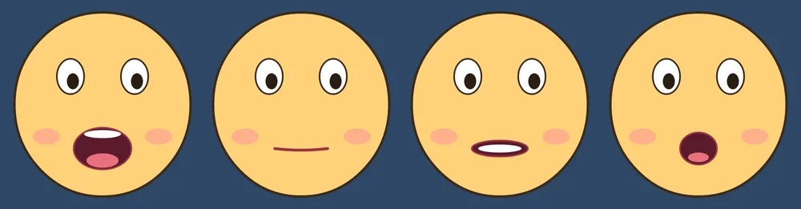
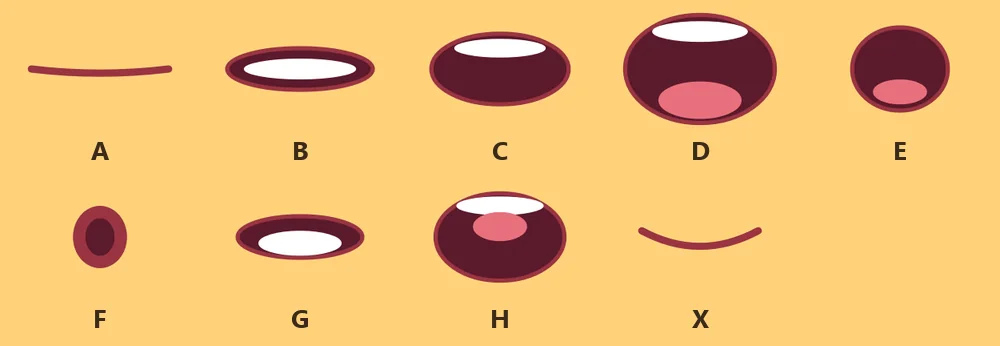
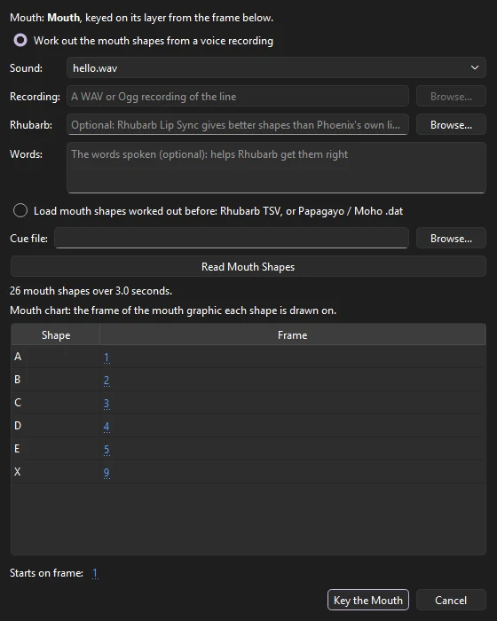
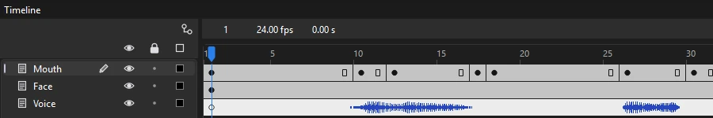
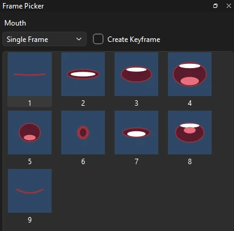

Tutorials
Lip sync
Make a character say a line: Phoenix listens to the voice and keys a mouth symbol's shapes to it, then you touch up a shape with the Frame Picker.
This page is also a lesson inside Phoenix: choose and start Lip sync, and Phoenix points at each control as you go. It takes about 6 minutes.
To follow along here instead, download the starting document, lip-sync.fla, and open it with .

A character looks as if it is talking when its mouth changes shape in time with the words. Phoenix can listen to a voice and put the right mouth shape on each frame for you.
The Voice layer holds a short line of dialogue. The Face layer holds the face, and the Mouth layer a graphic symbol, Mouth, with a different mouth shape on each of its frames.
1. Play it
Turn your sound up, then press Enter, or click the play button in the timeline header. You hear "Hello, I'm Phoenix. Let's make a cartoon!", but the mouth does not move.
2. Look inside the mouth
Press Enter again to stop. In the Library panel, double-click Mouth.
Its timeline has nine frames, one mouth shape on each. Each frame is labeled with its shape's letter: A closed for M, B and P; B teeth together for most other consonants; C open; D wide open; E rounded; F puckered for OO and W; G teeth on the lip for F and V; H the tongue up for L; and X at rest. The labels tell Phoenix which frame shows which shape.

3. Back to the scene
Click Scene 1 at the left of the edit bar, or press Ctrl+E.
4. Select the mouth
In the timeline, click frame 1 of the Mouth layer. That selects what is on it: the mouth, with a box around it on the stage.
5. Lip sync it
Choose .
Sound already shows hello.wav, the voice on the Voice layer. Click Read Mouth Shapes: Phoenix listens and lists the shapes it heard in the mouth chart, each on the frame labeled with its letter. Leave Starts on frame at 1 and click Key the Mouth.

6. Look at the keyframes
The Mouth layer now has a keyframe wherever the mouth changes, each showing one frame of Mouth. Drag the playhead along the frame numbers above the layers to watch the shapes go by.

7. Play it
Press Enter, or click the play button in the timeline header. The mouth opens and closes with the words.
8. Find the last sound
Press Enter again to stop. Click frame 73 of the Mouth layer: the hum of the N at the end of "cartoon". Phoenix closed the lips here (shape A), and the mouth is selected.
9. Change the shape

Choose . It shows the frames of Mouth as pictures, each with its frame number and label. Click 2 B: an N is said with the teeth together, not with the lips closed.
10. Play it again
Press Enter. The line ends on the teeth before the mouth comes to rest.
What you did
You keyed a whole line of dialogue at once, then touched up one shape by hand. Lip Sync is one step: takes it all back. Phoenix keeps the mouth chart with the symbol for next time.
Phoenix's own listening goes by how loud and how hissy the voice is, so it uses A to E and X. For sharper results, download Rhubarb Lip Sync (free) and choose it under Rhubarb in the Lip Sync window; it uses all nine shapes, and typing the words under Words helps it more.
For your own character, draw each mouth shape on a frame of a graphic symbol and label the frame with the shape's letter (see Frame labels). A recording that is not in the library yet can be read straight from disk: choose A recording on disk under Sound.
For everything this tutorial touches on, see Lip sync and The Frame Picker.